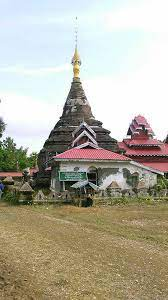

About a mile west of the pagoda hill . It is located about 400 yards west of Lokamar Aung Pagoda by the creek on
the pagoda. The statue is said to have been in the water for a thousand years and was named after the god.
Wisdom is 12 feet 3 inches. Many works resemble the great Mahamuni film .
 It is a pagoda built on top of the
cave where there is a big statue of the BuddhaIt is called The base is a square with a 20-foot-high wall. It has
four steps. After four steps, turn into a circle and ring the bell. ဖုန် ရစ်၊ Birds of a feather flock together.
The steps of the umbrella are beautiful. There are 12 fonts. The whole pagoda is 120 feet in wisdom. There was a
lion in each of the four corners of his shoes. East There are entrances to the south and north. The cave road is
connected to Gandhakuti Temple . You can see the statue made of a single stone with its back to the back wall.
It is a pagoda built on top of the
cave where there is a big statue of the BuddhaIt is called The base is a square with a 20-foot-high wall. It has
four steps. After four steps, turn into a circle and ring the bell. ဖုန် ရစ်၊ Birds of a feather flock together.
The steps of the umbrella are beautiful. There are 12 fonts. The whole pagoda is 120 feet in wisdom. There was a
lion in each of the four corners of his shoes. East There are entrances to the south and north. The cave road is
connected to Gandhakuti Temple . You can see the statue made of a single stone with its back to the back wall.
History
King Sandar of the Great Dynasty established and ruled Vesali in 327 AD. The queen was the queen of the Thaksin
dynasty of Kapilavat . On one occasion, the queen applied to King Sandakhawin of Kapilava for her help. The king
also sent a messenger to Kapilavat and brought a statue of Thekmoni. The statue was put on a sailing ship in
Vesali , Rakhine StateWhen they reached the left corner of the temple, the storm hit, the ship sank, and the
statue of Thakmuni sank. However, they searched for him but could not find him. After returning to Vesali, the
nobles and envoys returned from the pagoda and reported the matter to the king. When the queen heard this, she
became very depressed and fell into bed. The king then carefully carved a large stone on behalf of Thekmoni and
offered it to the queen.
The queen offered flowers and prayed. In this life, the disciple does not see the
Blessed One. Though it is not offered. She prayed that she would be able to return to her life as a devotee in
the next life. In 1593, King Mrauk-U made the Golden PalaceReigned His wife , Princess Bago, was not lateA
daughter was born in A group of courtiers who came to the king to apply for the birth of a daughter met a
fisherman who came to the palace to apply for a statue of the goddess of glory. The fisherman also claimed to
have found the statue in the water. Then the virgins also reported that the queen had given birth to a daughter,
and the king was overjoyed that the two marriages came at the same time. He rewards those who apply. Afterwards,
the emperor ordered a spectacular ceremony, which was carried by tens of thousands of nobles with strong ropes.
But the image was taken out of the water.

It could not be brought ashore at all. Then the king The nobles were
asked why the statue could not be pulled out of the water. Kaung Kyaw Htin, a left-wing leftist MP, talks about
the disappearance of the statue of Queen Suppabadevi and Queen Thepmon Devi of Vesali. He applied for the award.
He said that the Buddha would appear only if his daughter, who was born in the King, was present, and that the
Buddha would appear as a genius. The rest was wrapped around the altar of the Buddha, swung over, and carried by
the ropes in the traditional way, and the image emerged from the water. The king was very happy and had the land
filled with sand. မီး တား၊ သိမ်း၊ He built a cave and donated it. To perform God Wisdom Many servants of God.
သင်္⁇ ျီ၊ Farm Garden Pun Tin Suan Tin He donated all but one of the letters. The statue is said to have been in
the water for a thousand years and was named after the god.It was built by King Min Raja in 1603 AD. The emperor
declared his daughter Pan Thida to be the benefactor of this deity.